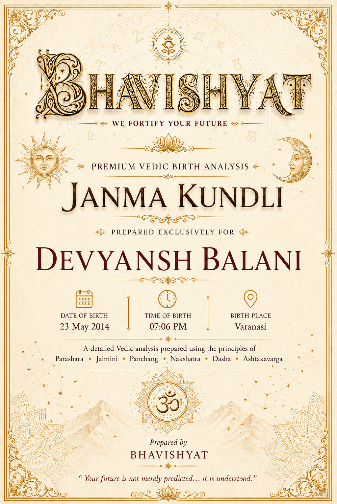
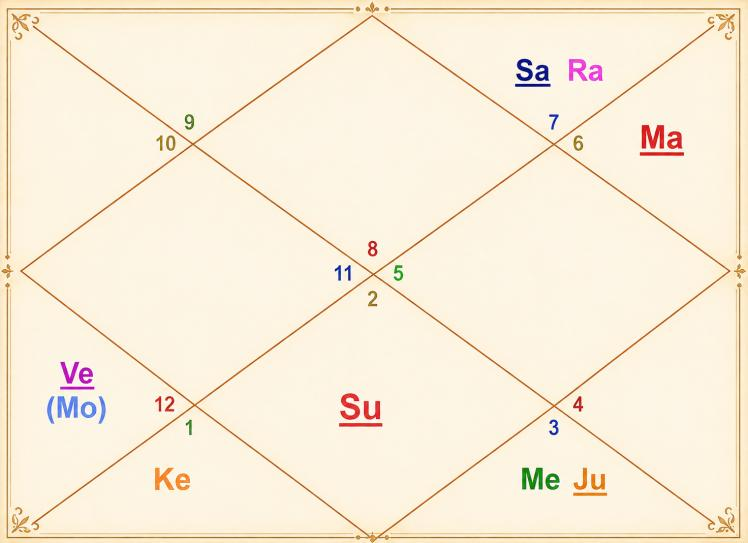

Janma Kundli • Devyansh Balani
Birth Details & Panchang
| Name | Devyansh Balani | Paksha | Krishna |
| Date of Birth | 23 May 2014 | Tithi | Dashami (10) |
| Time of Birth | 07:06 PM | Nakshatra | Uttara Bhadrapada |
| Birth Place | Varanasi | Vaar | Friday |
| Longitude | 83°00' E | Yoga | Vishkumbha |
| Latitude | 25°20' N | Karan | Vishti / Bhadra |
| Ascendant | Scorpio | Asc Lord | Mars |
| Tithi Lord | Moon | Tithi Deity | Yama |
| Nakshatra Lord | Saturn | Nakshatra Deity | Ahir Budhyana |
| Yoga Deity | Yama | Karan Deity | Kaal |
| Yogi | Saturn | Duplicate Yogi | Moon |
| Abhiyogi | Moon | Dagdha Rashi | Leo (5), Scorpio (8) |
Natal Chart (Rashi)

| Planet Distribution | Visible Half, Lower Half | ||
| Ascendant | Scorpio (Vrishchika) | Moon / Sun Sign | Pisces (Meena) / Taurus (Vrishabha) |
| Malefic | Mercury (Budh), Venus (Shukra) | Shunya Nakshatra | Punarvasu, Uttara Ashadha, Pushya |
| Maraka | Venus (Shukra), Jupiter (Brihaspati) | Dasha Balance | 17Y 3M 3D |
| Badhaka | Moon (Chandra) | Mangalik | No |
| Birth Dasha | Sa-Sa-Mo (1-1-6) | ||
Janma Kundli • Devyansh Balani
Favourable Influences
| Benefic Years | 17, 19, 22, 26, 28, 31, 35, 37 | ||
| Favourable Days | Sunday, Monday, Tuesday | ||
| Favourable Planets | Sun, Moon, Mars | Unfavourable Planets | Mercury, Venus |
| Favourable Signs | Aquarius, Taurus, Cancer, Capricorn | ||
| Favourable Ratna | Coral | Favourable UpRatna | Carnelian, Red Jasper |
| Lucky Ratna | Pearl | Favourable Deity | Shankar |
| Favourable Metal | Copper | Favourable Colour | Brick Red |
| Direction | South | Favourable Cereals | Rice |
| Favourable Plant | Kadamba | ||
| Favourable Temple | Somnath Temple | ||
Planets in Rashi Chart
| Planet | Lordship | Sign | Nakshatra | Nak. Lord | Nak. Count | Nav Tara | Char Karak |
|---|---|---|---|---|---|---|---|
| Sun | 10L | Taurus (2) | Krittika | Sun | 5 N | 5 | Putrakarak (5H) |
| Moon | 9L | Pisces (12) | Uttara Bhadrapada | Saturn | 1 N | 6 | Gnatikarak (6H) |
| Mars | 6L, 1L | Virgo (6) | Hasta | Moon | 15 N | 7 | Matrikarak (4H) |
| Mercury | 8L, 11L | Gemini (3) | Mrigashira | Mars | 7 N | 2 | DaraKarak (7H) |
| Jupiter | 2L, 5L | Gemini (3) | Punarvasu | Jupiter | 9 N | 9 | Bhratrikaraka (3H) |
| Venus | 7L, 12L | Pisces (12) | Revati | Mercury | 2 N | 4 | Atmakarak (Life) |
| Saturn | 3L, 4L | Libra (7) | Vishakha | Jupiter | 18 N | 1 | Amatyakarak |
| Rahu | — | Libra (7) | Chitra | Mars | 16 N | 8 | — |
| Ketu | — | Aries (1) | Ashwini | Ketu | 3 N | 3 | — |
| Debilitated Planet(s) | — | Combust Planet(s) | — |
| Retrograde Planet(s) | Saturn | ||
Sarvastakvarga & Houses
| Very Strong (35+) | — | ||
| Strong (31-35) | 3H, 6H, 10H | ||
| Above Average (28-30) | 1H, 4H, 5H | ||
| Average (28) | 4H | ||
| Below Average (24-27) | 2H, 7H, 8H, 9H, 12H | ||
| Weak (21-23) | 11H | ||
| Very Weak (<21) | — | ||
Janma Kundli • Devyansh Balani
Houses in Rashi Chart
| House | Sign | Planets | SAV | Lords | Aspect |
|---|---|---|---|---|---|
| 1H | Scorpio (8) | — | 30 | — | — |
| 2H | Sagittarius (9) | — | 26 | — | Mars, Saturn, Ketu |
| 3H | Capricorn (10) | — | 33 | — | — |
| 4H | Aquarius (11) | — | 28 | — | Jupiter, Rahu |
| 5H | Pisces (12) | Moon, Venus | 29 | 9L; 7L, 12L | — |
| 6H | Aries (1) | Ketu | 35 | — | Mars |
| 7H | Taurus (2) | Sun | 26 | 10L | — |
| 8H | Gemini (3) | Mercury, Jupiter | 25 | 8L, 11L; 2L, 5L | Rahu |
| 9H | Cancer (4) | — | 25 | — | Saturn |
| 10H | Leo (5) | — | 32 | — | Ketu |
| 11H | Virgo (6) | Mars | 22 | 6L, 1L | — |
| 12H | Libra (7) | Saturn, Rahu | 26 | 3L, 4L | Jupiter |
Bhinnashtak Varga (BAV)
| Sign | Sa | Ju | Ma | Su | Ve | Me | Mo | Ra |
|---|---|---|---|---|---|---|---|---|
| 8 | 5 | 5 | 3 | 4 | 5 | 5 | 3 | 4 |
| 9 | 2 | 6 | 1 | 3 | 5 | 3 | 6 | 4 |
| 10 | 5 | 4 | 4 | 4 | 5 | 5 | 6 | 5 |
| 11 | 6 | 4 | 2 | 5 | 6 | 2 | 3 | 4 |
| 12 | 3 | 6 | 3 | 3 | 5 | 4 | 5 | 2 |
| 1 | 3 | 6 | 5 | 5 | 5 | 8 | 3 | 1 |
| 2 | 4 | 2 | 3 | 5 | 4 | 5 | 3 | 3 |
| 3 | 2 | 4 | 2 | 3 | 4 | 6 | 4 | 2 |
| 4 | 1 | 7 | 3 | 2 | 5 | 3 | 4 | 5 |
| 5 | 6 | 4 | 5 | 6 | 3 | 4 | 4 | 4 |
| 6 | 1 | 6 | 3 | 3 | 1 | 3 | 5 | 6 |
| 7 | 1 | 2 | 5 | 5 | 4 | 6 | 3 | 3 |
Janma Kundli • Devyansh Balani
Vimshottari Dasha
Maha Dasha
| Dasha Lord | From | To |
|---|---|---|
| Saturn | 25-Aug-2012 | 25-Aug-2031 |
| Mercury | 25-Aug-2031 | 24-Aug-2048 |
| Ketu | 24-Aug-2048 | 24-Aug-2055 |
| Venus | 24-Aug-2055 | 24-Aug-2075 |
| Sun | 24-Aug-2075 | 24-Aug-2081 |
| Moon | 24-Aug-2081 | 24-Aug-2091 |
| Mars | 24-Aug-2091 | 24-Aug-2098 |
| Rahu | 24-Aug-2098 | 24-Aug-2116 |
| Jupiter | 24-Aug-2116 | 24-Aug-2132 |
Antar Dasha (Saturn Maha Dasha)
| AD Lord | From | To |
|---|---|---|
| Saturn | 25-Aug-2012 | 28-Aug-2015 |
| Mercury | 28-Aug-2015 | 07-May-2018 |
| Ketu | 07-May-2018 | 16-Jun-2019 |
| Venus | 16-Jun-2019 | 15-Aug-2022 |
| Sun | 15-Aug-2022 | 28-Jul-2023 |
| Moon | 28-Jul-2023 | 26-Feb-2025 |
| Mars | 26-Feb-2025 | 06-Apr-2026 |
| Rahu | 06-Apr-2026 | 10-Feb-2029 |
| Jupiter | 10-Feb-2029 | 25-Aug-2031 |
Pratyantar Dasha (Rahu Antar Dasha)
| P. Dasha | From | To |
|---|---|---|
| Rahu | 06-Apr-2026 | 10-Sep-2026 |
| Jupiter | 10-Sep-2026 | 26-Jan-2027 |
| Saturn | 26-Jan-2027 | 10-Jul-2027 |
| Mercury | 10-Jul-2027 | 05-Dec-2027 |
| Ketu | 05-Dec-2027 | 03-Feb-2028 |
| Venus | 03-Feb-2028 | 26-Jul-2028 |
| Sun | 26-Jul-2028 | 16-Sep-2028 |
| Moon | 16-Sep-2028 | 12-Dec-2028 |
| Mars | 12-Dec-2028 | 10-Feb-2029 |
Janma Kundli • Devyansh Balani
Nav Tara Sequence
| Planet | Chara Karak | House | Lordship | Strength | Nakshatra | Lord | Placement |
|---|---|---|---|---|---|---|---|
| Saturn | Amatyakarak | 12H | 3L, 4L | Below Avg (24-27) | Vishakha | Jupiter | 8H |
| Mercury | DaraKarak (7H) | 8H | 8L, 11L | Below Avg (24-27) | Mrigashira | Mars | 11H |
| Ketu | — | 6H | — | Strong (31-35) | Ashwini | Ketu | 6H |
| Venus | Atmakarak (Life) | 5H | 7L, 12L | Above Avg (28-30) | Revati | Mercury | 8H |
| Sun | Putrakarak (5H) | 7H | 10L | Below Avg (24-27) | Krittika | Sun | 7H |
| Moon | Gnatikarak (6H) | 5H | 9L | Above Avg (28-30) | Uttara Bhadrapada | Saturn | 12H |
| Mars | Matrikarak (4H) | 11H | 6L, 1L | Weak (21-23) | Hasta | Moon | 5H |
| Rahu | — | 12H | — | Below Avg (24-27) | Chitra | Mars | 11H |
| Jupiter | Bhratrikaraka (3H) | 8H | 2L, 5L | Below Avg (24-27) | Punarvasu | Jupiter | 8H |
Birth Chart Nav Tara Chakra
| Saturn (Janam) | 1 | Moon | 10 | 19 | ||
| Mercury (Sampat) | 2 | Venus | 11 | 20 | ||
| Ketu (Vipat) | 3 | Ketu | 12 | 21 | ||
| Venus (Kshem) | 4 | 13 | 22 | |||
| Sun (Pratyari) | 5 | Sun | 14 | 23 | ||
| Moon (Sadhak) | 6 | 15 | Mars | 24 | ||
| Mars (Nidhan) | 7 | Mercury | 16 | Rahu | 25 | |
| Rahu (Mitra) | 8 | 17 | 26 | |||
| Jupiter (Ati Mitra) | 9 | Jupiter | 18 | Saturn | 27 |
Important Saturn Transits
| 1st Sade Sati | 29 Apr 2022 – 17 Apr 2030 | ||
| 2nd Sade Sati | 25 Feb 2052 – 29 May 2059 | ||
| 3rd Sade Sati | 12 Apr 2081 – 05 Apr 2089 | ||
| Ashtam Shani | 31 May 2032 – 13 Jul 2034 | ||
Janma Kundli • Devyansh Balani
Other Important Transits
| Type | Planet | House | SAV/BAV | From – To |
|---|---|---|---|---|
| Good | Jupiter | 9H | 25, 7 | 02 Jun 2026 – 31 Oct 2026 |
| Good | Jupiter | 9H | 25, 7 | 25 Jan 2027 – 26 Jun 2027 |
| Good | Rahu | 3H | 33, 5 | 05 Dec 2026 – 23 Jun 2028 |
| Challenging | Ketu | 7H | 26 | 11 Jan 2030 – 31 Jul 2031 |
Lal Kitab Birth Chart
| HN | Rashi | Planets | Varshphal Yr 13 (May'26–May'27) | Varshphal Yr 14 (May'27–May'28) |
|---|---|---|---|---|
| 1 | Scorpio (8) | — | — | — |
| 2 | Sagittarius (9) | — | Mercury, Jupiter | — |
| 3 | Capricorn (10) | — | — | — |
| 4 | Aquarius (11) | — | Saturn, Rahu | — |
| 5 | Pisces (12) | Moon, Venus | — | Moon, Venus |
| 6 | Aries (1) | Ketu | Ketu | — |
| 7 | Taurus (2) | Sun | Sun | Ketu |
| 8 | Gemini (3) | Mercury, Jupiter | — | Sun |
| 9 | Cancer (4) | — | Mars | Saturn, Rahu |
| 10 | Leo (5) | — | — | Mars |
| 11 | Virgo (6) | Mars | Moon, Venus | Mercury, Jupiter |
| 12 | Libra (7) | Saturn, Rahu | — | — |
Janma Kundli • Devyansh Balani
Part B — Panchang Insights
Tithi — Krishna Paksha Dashami (Water)
Indicates critical thinking, perfectionism and a preference for solitude. This Poorna Tithi supports completion of any work the native begins, and brings support from the social circle. The native should avoid micromanagement and nitpicking in general.
Moon — Waning (~35% luminous)
Natal Moon is waning, around 35% luminous. It is advisable for the native and his mother to perform Ganga Snan periodically.
Money — Tithi Deity Yama
Maintaining discipline, as aligned with Tithi Deity Yama, promotes richness and wealth.
Vaar — Friday
Gives comfort, luxury and opulence. Makes the native charming, artistic and sociable.
Fire & Health
Chanting Sri Suktam and worshipping Goddess Parvati is advised if there is a problem in relationship or family, or financial wastage and imbalance.
Nakshatra — Uttara Bhadrapada (Air)
Good social circle; body type usually similar to the father; liberal thoughts; good communication skills; helpful, supportive and unbiased nature; strong social standing and a gift for excellent explanations. Career similar to the father's; normally stays away from family but later resettles with family. Important ages: 19, 24, 64, 68.
Yoga — Vishkumbha
Vishkumbha Yoga of the native demands discipline for success.
Karan — Vishti / Bhadra (Action)
Supportive of service-sector related work and technical work behind any system.
Dagdha Rashi — Leo (5), Scorpio (8)
For the Ascendant sign Scorpio being a burnt sign, a ghee diya should be lit in the south-east corner (Agni Kon) of the house.
Rashi Chart Overview
Planet Distribution
The later part of life would be more eventful than the beginning.
Kal Sarp Yoga
No Kal Sarpa Dosh in the chart of the native.
Janma Kundli • Devyansh Balani
Nature, Personality & Appearance — Ascendant Scorpio
Ascendant
Speaks sweetly, smart at talking, secretive by nature and difficult to understand; may become extremely selfish. Competitive nature with the ability to win.
Scorpio
Mysterious, transformative, emotional, determined and intuitive — sometimes jealous, controlling, obsessive or revengeful.
Physical Features
Middle stature, well-proportioned body, broad face and a prominent chin.
Lifestyle
Loves mysteries, research, occult sciences and deep-water places; dislikes betrayal and superficiality.
More about Ascendant
Strong willpower and authoritative qualities. Inexhaustible energy. Prefers thorough understanding. Good executive ability and confidence. A reputation for secretive actions. An excellent researcher who works best independently.
Weakness
Jealous, controlling, obsessive, revengeful.
Impact of Planetary Placements
Sun — 7th House
Short-tempered, aggressive nature. Two marriages in the family. Some mentally challenged person lives nearby the residence. Good for business. Gives name and fame to the native — very good for branding in the native's name. Gets a job early, with challenges in promotion.
Moon — 5th House
Very good for education — self and children. Multiple-income yoga; earns from the stock market, but beware of risky speculation. Good yoga for a government job. Malefic impact of Rahu gets reduced.
Mars — 11th House
Leader, with good analytical skills and planning ability.
Janma Kundli • Devyansh Balani
Impact of Planetary Placements (contd.)
Mercury — 8th House
Prone to teeth, neurological or skin-related ailments. Frequent visit to hospital or court of law in the relevant dasha. Gives foreign travel or related work.
Jupiter — 8th House
The native has to stay away from the father. Liberal in nature; loves to support others.
Venus — 5th House
Supports winning in competition; creative; a music lover. Good yoga for wealth; gains more.
Saturn — 12th House
Frequent visit to hospital or court of law. Supports foreign travel or related work. Take any ailments related to the legs seriously — prone to leg pain or related problems.
Rahu — 12th House
Disturbed sleep, many plans, unnecessary expenditure. Foreign-income yoga; out-of-the-box thinking; a competition killer. Foreign travel may include the Middle East or Muslim countries. Change of residence within one year of birth. Grandfather may not support his father much. Do not invite birds onto the roof or feed them there; no green grass or plants on the roof.
Ketu — 6th House
Defeats enemies. Danger through reptiles and small animals. Eye trouble likely. Not good for the maternal uncle. Cuts the debt of the native but may give health issues. The native may not complete a job, leaving in between and switching profession.
Sun — 2nd Rashi
Gets support from father and family members; help and support from authority. Two marriages in the family.
Moon — 12th Rashi
Emotional, dreamy, spiritual and compassionate. Foreign-income yoga.
Mars — 6th Rashi
Good writing skills; wins in tough conditions; good analytical ability.
Janma Kundli • Devyansh Balani
Impact of Planetary Placements (contd.)
Jupiter — 3rd Rashi
Sweet talker; focused and dedicated.
Saturn — 7th Rashi
Property yoga; political connections. Gives money for sure. Good for business.
Rahu — 7th Rashi
Usually starts from a job but switches to business later.
Ketu — 1st Rashi
Truth lover; loves to travel.
Planetary Combinations
Moon + Venus
Mind drawn to luxury, house, comfort and vehicle.
Jupiter + Mercury
Use or throw away brass utensils in the house. Good yoga for success through knowledge — a kind of Saraswati Yoga.
Rahu + Saturn
Triggers instability in career or business whenever activated by dasha or transit.
12 Houses of Rashi Chart
- 1st House — Secretive, stubborn, egoistic, research-oriented; expert in taking revenge.
- 2nd House — Limelight may follow sadness or difficulty. The native keeps many secrets.
- 3rd House — Should not ignore intuition. Big changes in life, several times.
- 4th House — Lucky for family; wise in money matters and finance; wealth through foreign connections.
- 5th House — Gains through property and vehicle.
- 6th House — Education at a distant place, and a good sum spent.
- 7th House — Competition and dispute at the workplace.
- 8th House — Attachment with father, teacher and guru.
Janma Kundli • Devyansh Balani
12 Houses of Rashi Chart (contd.)
- 9th House — Earning and wealth creation using debt or loan.
- 10th House — Spends more on luxury and comfort.
- 11th House — Focus on earning money, social circle and wealth yoga.
- 12th House — Gain in wealth during the dasha of Jupiter; events in the family; earning through commission or rental.
- Living away from the birthplace; visiting or living overseas.
- Break in education or change of stream; research-oriented mind.
- Using debt or loan in earning money; dispute with the social circle on money matters.
- Resilient, with power to deal with critical situations and crisis-management skill.
- Support of luck and support from the father; luck favours earning wealth.
- Public dealing in profession; food-related business or work.
- Rental income, earning through commission, and a hidden income source.
- Education at a distant place or abroad.
Sarvashtakvarga — Yearly Outlook
| Tough Years | 6, 39 | ||
| Good Months of the Year | January – March, August – September | ||
| Challenging Months of the Year | July – August, September – November | ||
| Lucky People for Native | Capricorn (10) | ||
| Unfavourable People for Native | Libra (7) | ||
| Aptitude | Good communication and analytical skills; ability to win competitions and challenges; yoga for higher social status | ||
| Favourable Months for Starting Education | November – December, August – September | ||
| Strong Lagna | The strong Lagna of the native will ward off problems — relatively fewer difficulties will have to be faced | ||
| Wealth-Giving Dasha / Antardasha | All nine planets | ||
Janma Kundli • Devyansh Balani
Karmic Remedies — Lal Kitab
Planet in Houses
- Leave home after drinking water; avoid donation in the evening.
- Store rain water on the rooftop. Avoid Tulsi, money plant and similar plants at home. Throw away torn clothes.
- Donate food to black ants.
- Disturbed night sleep. Avoid a blue bedsheet and blue footwear; use red ones.
Planet in Signs
- Keep rain water at home. Do not stay on the ground floor; do not impart free education to children.
- Never keep a parrot or birds at home.
- Throw away broken umbrellas. Large unused brass vessels at home should be used or thrown away.
- Feed a black cow. Avoid gifting liquor.
Abbreviations
A Sacred Dedication
With Love & Blessings
for Devyansh Balani's journey ahead
कर्मण्येवाधिकारस्ते मा फलेषु कदाचन।
मा कर्मफलहेतुर्भूर्मा ते सङ्गोऽस्त्वकर्मणि॥ ४७॥
तेरा कर्म करने में ही अधिकार है, उसके फलों में कभी नहीं। इसलिए तू कर्मों के फल हेतु मत हो तथा तेरी अकर्मण्यता में भी आसक्ति न हो।
“You have the right to perform your prescribed duties, but you are not entitled to the fruits of your actions. Never consider yourself to be the cause of the results of your activities, nor be attached to inaction.”
— Bhagavad Gita, Chapter 2, Verse 47
May Devyansh Balani walk his path with courage, clarity and grace — ever guided by wisdom, and ever held in light.
“Your future is not merely predicted… it is understood.”